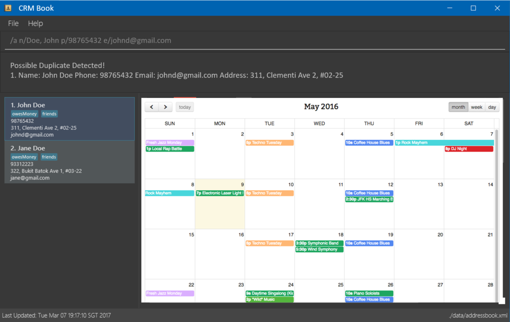

Have you ever felt like there are too many tasks to do, and you are unable to remember all of them? Or feel that your calendar is overflowing with sticky notes on the tasks to be done each day? Have no fear, as our all-in-one task management application, DoMePlease, is here to save your day!
DoMePlease manages the different types of tasks that you will encounter in your daily life, be it a deadline for submission, or even a date with your significant other, this application can show you what all the tasks you have in a month in one glance, or even a list of tasks for a specific day. DoMePlease also manages your list of ad-hoc tasks, which are non-dated tasks such as "Read the new Harry Potter book!", and displays them beautifully and neatly at the side of the application, so you can refer to them any time you have some free time.
Love typing? You will love DoMePlease, as you only need to use the keyboard to type simple commands to manage your tasks.
2.1 Ensure you have Java version 1.8.0_60 or later installed in your Computer.
Having any Java 8 version is not enough.
This app will not work with earlier versions of Java 8.
2.2 Download the latest DoMePlease.jar from the 'releases' tab.
2.3 Copy the file to the folder you want to use as the home folder for DoMePlease.
2.4 Double-click the file to start the app. The GUI should appear in a few seconds.

2.5 Type the command in the command box and press Enter to execute it.
e.g. typing
helpand pressing Enter will open the help window.
2.6 Some example commands you can try:
add Walk the dog d/Don't forget to pick up poo: Add a floating task.list all: List all the floating tasks, deadline and events in the application.delete 3: Deletes the 3rd task shown in the current list.exit: Exits the application.
2.7 Refer to the Features section below for details of each command.
3.1 Viewing help : help
Format:
help
Help is also shown if you enter an incorrect command e.g.abcd
3.2 Adding a task: add
Adds a floating task to DoMePlease
Format:add TASKNAME d/TASK_DESCRIPTION t/TAG...Adds a deadline to DoMePlease
Format:add TASKNAME d/TASK_DESCRIPTION date/DATE TIME [t/TAG...]Adds an event to DoMePlease
Format:add TASKNAME d/TASK_DESCRIPTION date/STARTDATE STARTTIME to ENDDATE ENDTIME [t/TAG...]
Format:add TASKNAME d/TASK_DESCRIPTION date/DATE STARTTIME to ENDTIME [t/TAG...]
** Refer to appendix for possible formats for DATE & TIME
Words in
UPPER_CASEare the parameters, items inSQUARE_BRACKETSare optional, items with...after them can have multiple instances. Order of parameters are fixed.Tasks can have any number of tags (including none)
Examples:
add Buy pencil d/Pencil to shade OAS sheetadd Wash Clothes d/Wash with detergent date/27-9-2016 9pm t/!!!add Meeting d/Meet with Jim date/today 5pm to 6pm t/!!! t/jim
3.3 Listing all tasks : list all
Shows a list of all uncompleted floating tasks, deadline and events in the application.
Format:list all
3.4 Listing all overdue deadlines: list od
Shows a list of all overdue deadlines.
Format:list od
3.5 Listing all completed tasks: list done
Shows a list of completed floating tasks, deadlines and events.
Format:list done
3.6 Edit task in the application: edit
Edit the details of the floating task, deadline and event.
Format:edit INDEX [FIELDS]Edits the field of the task at the specified
INDEX. The index refers to the index number shown in the most recent listing.
The index must be a positive integer 1, 2, 3, ...Example:
list all
edit 2 d/Pilot 2B
Edits the 2nd floating task in DoMePlease. Example Buy Pencil.
A message will be displayed to inform the user that the task is edited.
3.7 Finding all floating tasks, deadlines and events containing any keyword in their name and tags: find
Finds all floating tasks, deadlines and events which names and tags contain any of the given keywords.
Format:find KEYWORD [MORE_KEYWORDS]The search is case insensitive, the order of the keywords does not matter, name, description, date, time and tag is searched, and task matching at least one keyword will be returned (i.e.
ORsearch).
Only full words will be matched e.g.Programwill not matchProgramming.Examples:
find EE2020
Returns “EE2020” and “ee2020”
find 2020- Returns nothing
3.8 Navigating through Calendar: view
Populate the list of deadlines and events of the selected DATE
Format:view DATEThe calendar panel of the application will list out all the deadlines on the day and events that start, ends or is on-going on the date.
Examples:
view 5
Output the full list of deadlines on the day and events that start, ends or is on-going on 5th of the current month view
view 5-10-2016
This command doesn't require you to be at the selected month. Output the full list of deadlines on the day and events that start, ends or is on-going on 5th October 2016.
3.9 Deleting a task : delete
Deletes the specified task from DoMePlease.
Format:delete INDEXDeletes the task at the specified
INDEX. The index refers to the index number shown in the most recent listing.
The index must be a positive integer 1, 2, 3, ...Examples:
list all
delete 2
Deletes the 2nd floating task in all the listed.
find Laundry
delete 11
Deletes the 1st event or deadline task in the result of thefindcommand.
3.10 Undoing a move: undo
Undo the previous command entered by user. (up to 3)
A message will be displayed to inform the user that the previous command has been undone.
Format:undo
3.11 Marking floating tasks and deadlines as done: done
Marking a completed a floating task and deadline as done.
Format:done INDEXMarks the floating tasks or deadline as done at the specified
index
The index refers to the index number shown in the most recent listing.
The index must be a positive integer 1,2,3, ..
The completed task will be moved to the archive listExamples:
list all
done 2
Mark the 2nd task in DoMePlease as completed.
3.12 Exiting the program : exit
Exits the program.
Format:exit
Q: Do I need to save manually? A: Data is saved in the hard disk automatically after any command that changes the data. There is no need to save manually.
Q: How do I transfer my data to another Computer?
A: Install the app in the other computer and overwrite the empty data file it creates with the file that contains the data of your previous DoMePlease.
| Command | Format |
|---|
Add | add TASKNAME d/TASK_DESCRIPTION @/DATE TIME [t/TAG...]
Delete | delete INDEX
Edit | edit INDEX [FIELDS]
INDEX Find | find KEYWORD [MORE_KEYWORDS]
List | list all , list od, list done
Help | help
View | view DATE
Done | done INDEX
Undo | undo
Possible Date formats DD-MM-YY : 18-10-16 DD-MM-YYYY : 27-2-2101 DD MMM YYYY : 15 MAY 2103 relative : today || tmr || next tuesday
Not accepted Date formats DD-MM DD.MM DD.MM.YY DD.MM.YYYY
Possible Time formats 24HR : 2359 am/pm : 2.30pm relative : 2 hours later || 30 minutes later
Not accepted Time formats 2500 230pm
This is not an exhaustive list of formats, please visit the following website for more information http://natty.joestelmach.com/doc.jsp